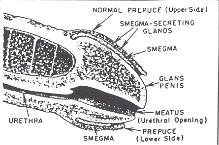

THE CIRCUMCISION REFERENCE LIBRARY
Nature's Assurance That the
Uncircumcised Glans Penis
Will Function Smoothly is Provided by Smegma

Smegma is secreted by glands beneath
the foreskin of the uncircumcised penis.
Is Smegma useful? Yes, certainly. It lubricates the cavity between the foreskin of the penis and the glans, thus allowing smooth movement between them during intercourse.
During an erection, the glans increases in size. The foreskin, on the other hand does not change its dimensions. It is yielding enough and thin enough to accept the enlarged glans. Furthermore, the foreskin is pressed backward during intercourse, and on subsidence of erection returns to its normal position.
These movements are not entirely passive but are aided by the relaxation of the muscle fibers within the foreskin.
But could these movements be comfortably performed if the surfaces between glans and foreskin were dry and harsh? Of course not. There would be difficulty, delay, need fro manipulation. Nature has therefore provided a “natural ointment,” smegma to ensure easy lubrication and protect this delicate region of the male genital organ.
To secure its even distribution, smegma is formed from the whole inner surface of the foreskin cavity. Recently, Soviet researchers at the Botkin's Hospital in Moscow have discovered important details of this process.
Smegma production, they find, is concentrated in the cells of innumerable small prominences, minute microscopic protrusions of various shapes and sizes found on the inner surface of the foreskin cavity.
The process is a continuous one: living cells are constantly growing toward the surface, only to undergo fatty degeneration in their turn and separate off as freshly formed smegma.
These smegma-forming prominences vary with the age of the individual. The prominences may be present in fair numbers, even in infants and young children, but they reach their largest size and greatest number in men between ages 20 and 40. Thereafter, the smegma-forming prominences regress until, in elderly men, they can be detected only in an atrophied form.
These findings tally with the amount of smegma produced at various ages. Comparatively little is formed in childhood. A noticeable increase occurs during adolescence, with its great acceleration of penis growth.
This is understandable because the penis is developing into its mature and adult form. Smegma is needed for the smooth operation of erection particularly during adolescence when sexual thoughts and dreams, nocturnal erections, and masturbation are common.
The adult stage follows with its period of maximal sexual activity. Sexual intercourse becomes a regular feature of life and the function of smegma for lubrication assumes its full value. Middle age follows with a decline in amount until there is a virtual absence of the substance in old age.
These findings are, of course, subject to individual differences; in some men, the penis remains well preserved and functional even into extreme old age.
Does smegma also contain sebum, the natural oil produced by the sebaceous glands or ordinary skin? This question has been debated for mary years but Soviet researchers have at last supplied the answer.
They find that in childhood sebaceous glands are in fact present in the inner surface of the foreskin. As age advances, these glands decrease in number and in adult life occur only at the base of the foreskin, inconstantly and sparsely.
Other researchers have found them in rather large numbers in some individuals. But in general, it is now clear that while sebum forms an essential part of smegma in childhood it makes no significant contribution to it in later life.
Attention has also been directed to certain papules present in some men on the corona of the glans. Recently naming them "pearly penile papules" - or P-3, for short - an American physician considers they are probably more common than in generally realized. They rarely cause trouble and, since they consist only of a network of blood vessels surrounded by connective tissue, they take no part in smegma production.
Smegma is a substance of considerable chemical complexity, but little is known of its exact composition beyond the fact that it contains neutral fats, fatty acids, sterols; other lipids and cell debris.
Scientific investigation is difficult because on exposure smegma readily undergoes changes in chemical composition and physical consistancy.; it can differ in color from yellow to white and may vary between individuals at different stages of life.
It also varies in amount in relation to the so-called "smegma producing capacity" of the foreskin cavity. In other words, a long or wide foreskin produces more smegma than a short or narrow one. This is to be expected since the function of smegma is to produce a uniform general lubrication between foreskin and glans.
How do these matters affect American men? Circumcision in infancy is a near routine procedure in the United States. Hence, as an American doctor recently stated, "the uncircumcised male . . . is becoming a rarity in our society." One must suppose then that most men would lack smegma though an absence of foreskin. [CIRP note: This paragraph which was published in September 1970 is outmoded. In 1971, the American Academy of Pediatrics stated, "there are no valid medical reasons for circumcision in the neonatal period." In 1989, the AAP amplified this by stating, "It (circumcision) is an elective procedure to be performed only if the infant is stable and healthy." In 1995, the AAP said, "A patients reluctance or refusal to assent should also carry considerable weight when the proposed intervention is not essential to his or her welfare and/or can be deferred without substantial risks." In addition, parents are becoming more aware of the negative consequences of circumcision. All of this has contributed to the rapid decline of infant circumcision in America. The US government reported that the intact rate for 1993 had climbed to more than 40%.]
This will be true for those whose circumcision is complete. However the operation is by no means an "all-or-none" procedure. Surveys have shown that as many as one-third of circumcised men are left with a portion of foreskin that partially covers the glans.
Adding to their number those individuals who have never been circumcised, we find a sizeable portion of men are still in possession of foreskins. Hence, from the practical point of view, it is important that they should realize the need for cleanliness of the foreskin cavity. This means, in effect keeping it free from an undesirable collection of smegma.
In its fresh state, smegma is a wholesome and functional lubricant. But, if allowed to accumulate in the foreskin cavity, it becomes changed into an unpleasant, unhealthy, and bad-smelling substance.
Such changes are due to chemical splitting of smegma fats and the action of skin germs, which are otherwise harmless. In addition, foreign material may gain access to the smegma deposit in the form of dirt, dust or sand, and urine and semen.
Normally, a healthy foreskin can be retracted for cleansing and smegma can be removed by washing. The fact that it is a superficial substance renders its removal easy, provided cleansing is performed with regularity. Particular attention should be given to the depths of the foreskin where smegma is liable to lodge in the pocket between foreskin and glans.
To these must be added phimosis, or narrowing of the foreskin opening at its free end, which in extreme cases, becomes converted to a hard and rigid ring.
These are conditions that require medical attention. This is necessary in order to regain genital health and restore enjoyable sexual relations, which though foreskin discomfort, may have become a source of unhappiness.
Without correct treatment, ill health of the foreskin is liable to worsen - formation of smegma continues and, without outlet or access for cleaning, deposits collect and harden within the foreskin cavity. Such compact masses of smegma can lead to chronic disease, and even prepare the way for cancerous changes.
Cancer of the penis is not common in the United States but is frequent in certain tropical countries. It is almost always associated with uncleanliness and longstanding ill health of the penis. Usually a preceeding phimosis is present. Since the tumor commonly develops with such a closed foreskin cavity, it has been considered that retained smegma could be the cancer-inducing agent. [CIRP note: Cancer of the penis is now known to be associated with the presence of the human papilloma virus (HPV). Cancer of the penis may occur in both circumcised and uncircumcised men if HPV is present. Additional risk factors are hygiene, genital warts, and number of sexual partners. Smegma is not now believed to be carcinogenic.]
Nevertheless, experimental investigation of this so-called "smegma theory of genital cancer" has had little direct bearing on cancer in the male sex. Rather, it has been concerned with the causation of cervical carcinoma in in women. (cancer of the neck of the womb.) This might be conceivably be induced by smegma transferred to the vagina by the male during sexual intercourse.
Such research is beset with difficulties. In the first place, distinction must be made between normal smegma and accumulated smegma, which has undergone a variety of changes in the warmth of the foreskin cavity. Hence, any potential cancer-inducing property could well lie in products formed by chemical breakdown or bacterial action rather than in smegma itself.
A further problem arises in collection of fresh smegma in sufficient amount for experimental research. For this reason some workers have used smegma from horses because these animals produce it is large amounts. But despite repeated inoculations of horse smegma into the vaginas of laboratory animals, the results have been conflicting with regard to its inducing malignant disease.
Clearly a number of factors are involved in the causation of malignant disease of the genital organs. Whether smegma does or does not play a part will be known only when the causes of cancerous changes in general become clear. [CIRP note: It is now clear that smegma is not a carcinogen. Cancer of the genital organs are caused by HPV and smoking. See Cancer for more information.]
Meanwhile, personal hygiene and care of the penis rank high as a protection against chronic disease. Remember that it is stale and accumulated smegma that is a source of ill health for the penis. Freshly formed smegma, washed away regularly and constantly replenishing itself, is a wholesome lubricant - making for ease in erection and smoothness in sexual intercourse.
http://www.cirp.org/library/normal/wright1/